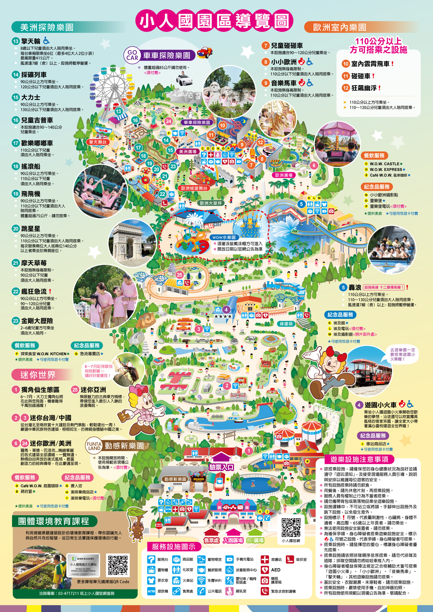

🎠 116 / 03 / 29（日）小人國歡樂日
去年在後援會大力推動之下，成功舉辦第一屆校外展演活動， 不僅增添孩子們展演的舞台，更透過活動凝聚團隊精神， 給孩子們一個更全方位的團隊生活體驗。
有鑑於此，今年度也籌劃了校外展演活動， 期盼孩子們、家長們能夠一同共襄盛舉， 一起來感受屬於國樂團的熱情與溫暖！
本次展演曲目內容多元，結合經典國樂、民謠與流行改編，呈現豐富且活潑的舞台演出。
| 順序 | 曲目 | 簡短說明 |
|---|---|---|
| 1 | 小星星 | 耳熟能詳的旋律，象徵學習與成長的起點 |
| 2 | 慶豐收 | 節奏明快，描繪豐收時的歡欣氣氛 |
| 3 | 馬蘭舞曲 | 富含民族舞蹈元素，旋律活潑熱情 |
| 4 | 阿美族舞曲 | 展現原住民文化特色與節奏魅力 |
| 5 | 駿馬奔馳 | 描繪馬匹奔馳草原的速度與氣勢 |
| 6 | 雨夜花 | 台灣經典民謠，旋律溫柔感人 |
| 7 | Soda pop | 流行音樂改編，呈現國樂多元風貌 |
| 8 | 金蛇狂舞 | 經典國樂名曲，熱鬧喜氣十足 |
| 9 | 歡樂的夜晚 | 輕快旋律，營造愉悅歡樂的氛圍 |
| 10 | 黑桃A | 節奏鮮明，為展演畫下精彩句點 |
走進迷你世界、搭乘好玩的遊樂設施， 再加上精彩的國樂展演， 是一趟結合音樂與歡樂的開心旅程！
| 票種 | 每人小計 (含門票＋保險＋車資) |
|---|---|
| 成童票（6歲以上） | $989 |
| 幼童票（3–未滿6歲） | $796 |
| 博愛票 | $789 |
團體入園可選擇由主辦單位協助代訂便當。
| 品項 | 價格 |
|---|---|
| 雞腿便當 | $130 |
| 排骨便當 | $120 |
| 素食便當 | $120 |
| 炒飯便當（含半塊排骨與時蔬） | $100 |
※ 便當需於入園前一週確認數量，確認後無法修改或取消。
於白雲國小門口集合，整隊後搭乘遊覽車出發
抵達園區, 欣賞迷你世界建築並拍照留念
樂器調音與演出前準備, 演出, 用餐
自由體驗園區各項遊樂設施
清點人數後搭車返回
平安賦歸，結束愉快的一天